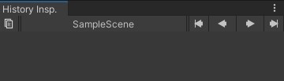
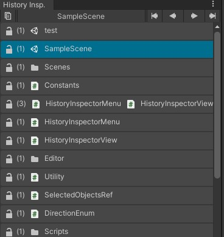

History Inspectorの紹介
この記事は「Unity アセット真夏のアドベントカレンダー 2021 Summer!」8/5の記事です。
概要
Unityでアセットの量が膨大なプロジェクトを扱っていると、必要なアセットを探すのに苦労します。
そういったときに手助けになるアセットが今回紹介する「History Inspector」です。
このアセットは選択したファイルの履歴を保存し、その履歴にアクセスする手段を提供するアセットです。
直近で触ったファイルをもう一度いじる必要があるケースはよくあり、そういったときにこのアセットがあると便利です。
使い方
History Inspectorをインストールした後、Window -> History Inspector -> Open History Inspector windowをクリックすると、以下のビューが表示されます。

以下動画のように左右の矢印ボタンでファイルの選択履歴を移動できます。
また、上記図の現在選択しているファイル「SampleScene」となっているところをクリックすると以下のような履歴一覧が表示されます。

この履歴一覧で鍵マークのアイコンがありますが、これはある種のお気に入り機能のようなものです。
選択履歴に関係なく、常に一番上に表示しておくことができます。
その次の(1)の数字はファイル選択数を指します。複数選択した場合もそれが履歴に残るため、このような数字が表示されています。
アセットのファイル構成
ソースコードが付属しているので、改造が可能です。
履歴にオブジェクト名しか出ないので、パスも表示したい思いが個人的に少しあります。
履歴の保存先
このアセットは履歴を/Assets/HistoryInspector/Database/selectionlist.assetに保存します。
バージョン管理する場合は、以下のファイルとフォルダを除外すると良いと思います。
/Assets/HistoryInspector/Database/
/Assets/HistoryInspector/Database.meta
まとめ
今回紹介したHistory Inspectorは選択したファイルの履歴を保存し、アクセスしやすくするアセットでした。
History Inspectorに履歴をロックするお気に入りのような機能がありますが、個人的にお気に入り機能ではオススメしたいアセットが別にあります。
それは「Kris’ Favorite Assets」です。
こちらは頻繁にアクセスするファイルをお気に入り登録できるので、併せて利用すると捗ります。
具体的に「Kris’ Favorite Assets が便利」で紹介しています。
使用バージョン
Unity 2019.4.29
History Inspector 1.2